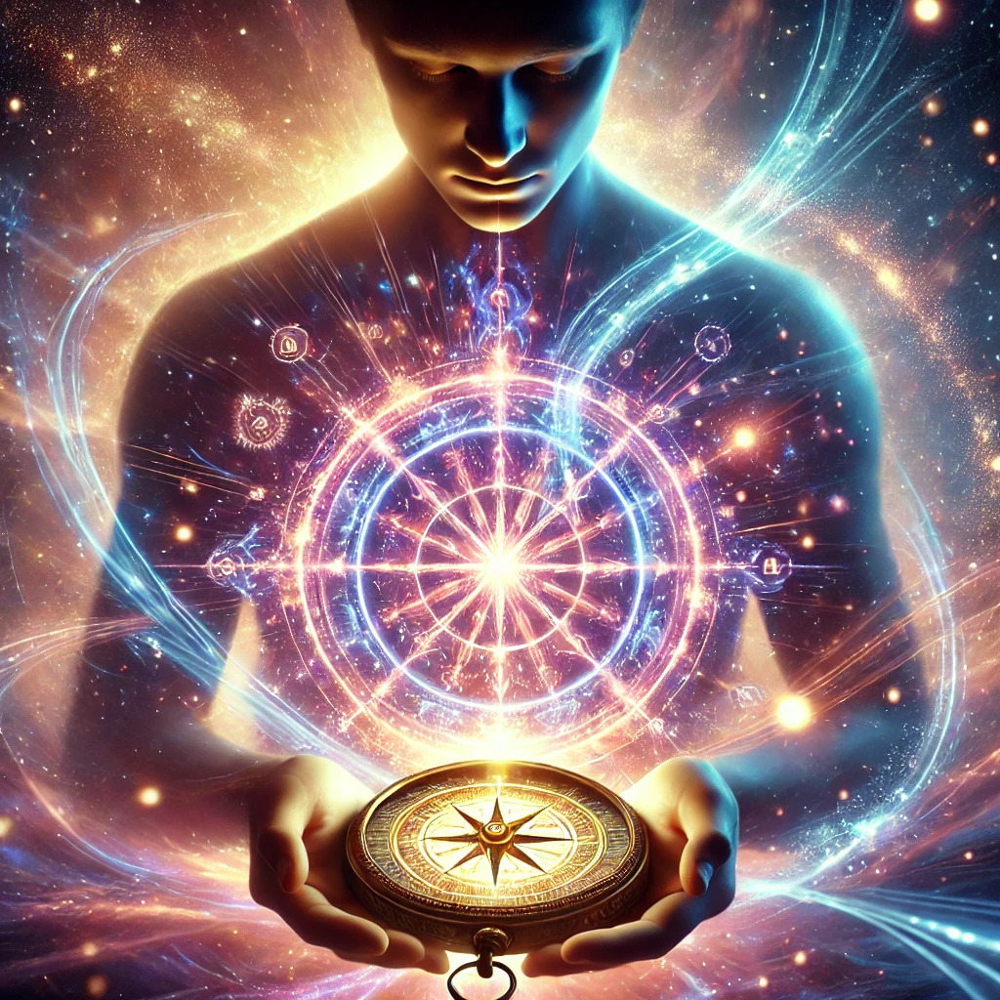

The glyphs on the compass glow brighter, their energy radiating through your hands. You close your eyes and focus your intent, feeling the vibration of the symbols resonate deep within your core. The compass pulses, its light intensifying as if responding to your will.
A surge of energy courses through you, connecting you to something vast and infinite. The compass feels alive, an extension of your own consciousness. Voices, distant yet clear, echo in your mind:
“The power within the glyphs is not external—it is a reflection of your own potential. Harness it, and you will shape not just your path, but the reality around you.”
The air around you hums with energy, and the glyphs begin to shift and reconfigure, offering new possibilities. You realize that the compass is a tool, but the power lies in how you choose to wield it.

How will you channel this power?